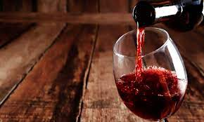
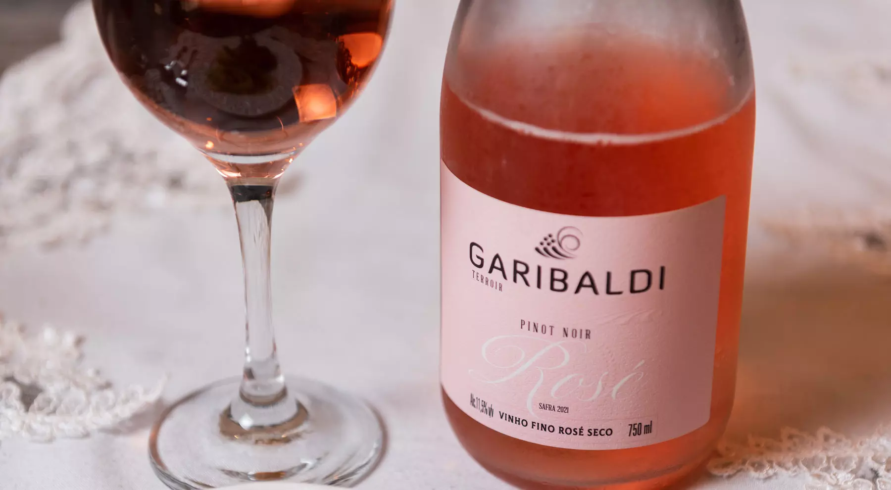

Existem muitos tipos diferentes de vinho, cada um com características únicas de sabor, cor e aroma.
Aqui estão algumas das variedades de vinho mais populares:
Vinho tinto
O vinho tinto é identificado por sua forte e escura coloração.
Tipo de vinho mais consumido no Brasil, o vinho tinto é produzido pela fermentação de uvas tintas, dentre as uvas utilizadas para a produção deste vinho se destacam: Cabernet Sauvignon, Carménère, Malbec, Merlot, Tempranillo, Pinot Noir, Syrah.
Dada a grande quantidade de uvas que podem ser utilizadas para a produção deste vinho, temos uma rica variedade de estilos e sabores de vinhos produzidos deste tipo.

Vinho branco
O vinho branco é identificado por sua colaração mais clara.
Ele é produzido pela fermentação de uvas tintas ou brancas, tendo sua maior distinção do vinho tinto na maneira de produção
O seu consumo no Brasil vem crescendo, sendo servidos normalmente mais gelados e para acompanhar comidas leves como peixes e frutos do mar.

Vinho Rosé
O vinho rosé é com sua coloração rosada é produzido a partir de uvas tintas, com um processo diferente de vinificação.
Esse vinho possui forte destaque na região de Provence, na França pela sua alta produção, consumo e qualidade.
Por ser considerado um 'vinho do verão', tem se adaptado muito bem ao clima brasileiro e rápidamente tem adquirido adeptos ao seu consumo.
